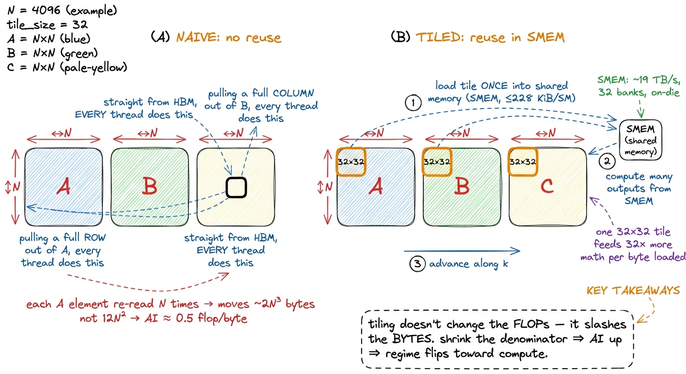
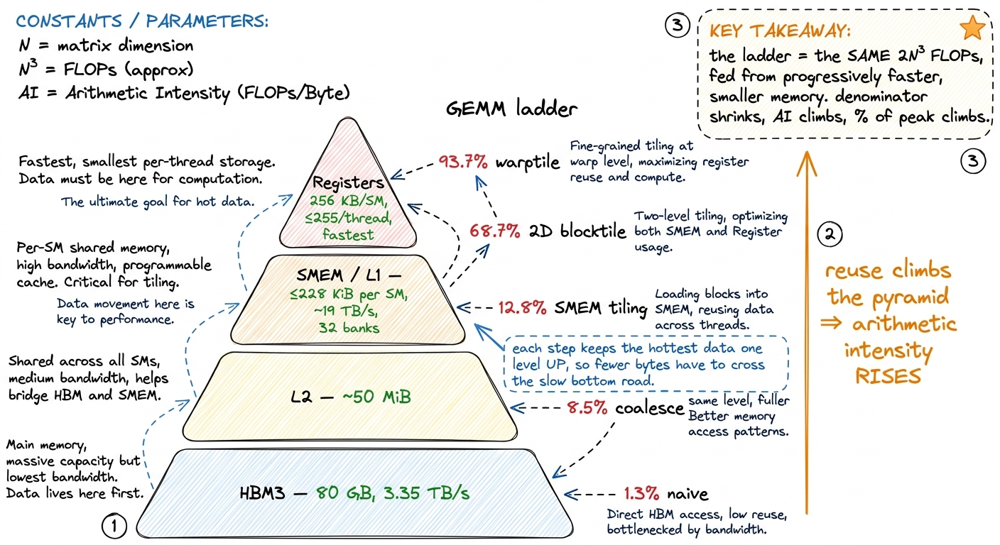
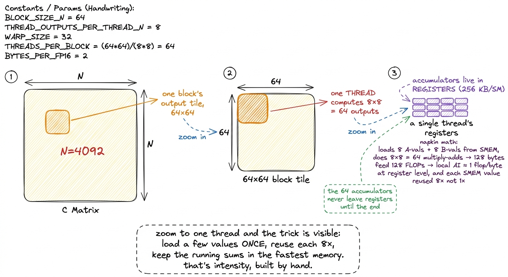

Arithmetic intensity AI
Let me start with a question that sounds too simple to be interesting, but turns out to decide everything: what does a GPU actually spend its time doing?
You might guess "math." That is the intuition everyone starts with — a GPU is a giant calculator, so it must spend its time calculating. But that intuition is wrong most of the time, and understanding why it is wrong is the single most useful thing you can learn before writing a fast kernel.
Here is the real answer. Every kernel you will ever write does two physically separate things. It moves bytes — pulling numbers out of memory and pushing results back — and it does math on those numbers once they arrive. These two things happen on different hardware, at different speeds, and, crucially, at the same time. The chip can be crunching numbers while it waits for the next batch of bytes to show up. So the time your kernel takes is not the math time plus the memory time. It is the larger of the two. Whichever one is slower is the one you are waiting on, and the other one is free.
That one idea — that compute and memory overlap, so you pay for the slower of the two — is the whole foundation. And the number that tells you which of the two is slower, before you have written a single line of code, is called arithmetic intensity.
This article answers one question: given a piece of work, can I tell in advance whether it will be limited by math or by memory — and therefore which optimizations can possibly help? By the end you'll be able to do the arithmetic on a napkin, and you'll understand why every rung of the GEMM ladder on this site — from a humiliating 1.3% of peak to a respectable 93.7% — is really the same move repeated, hammering on this one number. This is the arithmetic behind the three regimes, where we introduced the ridge point as a magic ≈295 and waved at where it comes from. Here we derive it from scratch.
The factory and the warehouse
Before any formulas, let's get a picture in our heads, because we're going to reuse it the entire way through. I'm borrowing it from Horace He's excellent essay on this, and it's the cleanest mental model I know.1 The factory–warehouse framing is from Horace He's "Making Deep Learning Go Brrrr From First Principles" (horace.io/brrr_intro.html). His article and Simon Boehm's CUDA GEMM writeup (siboehm.com/articles/22/CUDA-MMM) are the two sources this whole page leans on; the numbers below are theirs, re-derived.
Picture a factory next to a warehouse, connected by a single road.
- The factory is where work gets done — this is the GPU's compute units, the tensor cores and the ALUs. It's astonishingly fast.
- The warehouse is where all the raw material and finished goods are stored — this is High-Bandwidth Memory (HBM), the 80 GB of HBM3 sitting off to the side of an H100 die.
- The road between them is the memory bus. Every number the factory works on has to be trucked in from the warehouse, and every result has to be trucked back out. The road has a fixed width — a maximum number of trucks per second — and that width is the memory bandwidth.
Now the key insight. The factory and the road run in parallel. Trucks can be rolling down the road at the same time the factory is stamping out parts. So the total time to finish a job is not "trucking time plus factory time." It's whichever of the two is the bottleneck. If the factory is so fast that it's constantly standing idle waiting for trucks, you are memory-bound — the road is your limit. If the road delivers material faster than the factory can consume it, so trucks pile up outside, you are compute-bound — the factory is your limit.
 figure rendering · The central mental model. Compute and memory overlap, so a kernel's ru
figure rendering · The central mental model. Compute and memory overlap, so a kernel's ruHold onto this picture. Everything that follows is just making it precise. Arithmetic intensity is the question "how much factory-work do I get out of each truckload?" And the ridge point is the exact truckload-to-work ratio at which the factory and the road are perfectly balanced.
The definition, and why it has to be a ratio
So how do we turn "which is slower, the road or the factory?" into a number we can compute before running anything?
Here's the trick. We don't compare the times directly — that would require running the kernel. Instead we compare the work to the traffic, because both of those we can count by hand from the algorithm alone.
Arithmetic intensity is a fraction:
FLOPs performed
AI = ─────────────────────────────
bytes moved (loads + stores)The numerator is the useful floating-point work — every multiply and every add. The denominator is the total traffic: every byte the kernel reads from and writes to the memory level it's bottlenecked on, which for most kernels means HBM.2 You can define AI at any level of the hierarchy — HBM↔chip, L2↔SM, SMEM↔registers. The one that matters is the level you're actually starved at. For a naive kernel that's HBM; for a well-tiled kernel the bottleneck can move up the pyramid to SMEM bandwidth, which is exactly the sign your HBM tiling worked. We'll see this happen concretely later. The units are FLOPs per byte.
Why is a ratio the right thing? Because it captures exactly the balance we care about. A high ratio means "lots of math per byte" — the factory has plenty to chew on before it needs another truck, so you tend toward compute-bound. A low ratio means "barely any math per byte" — the factory finishes each truckload almost instantly and stands idle waiting for the next, so you're memory-bound. The beauty is that this number is a property of your algorithm and data layout. It's fixed before you write a single instruction. It is not a tuning knob you turn at the end.
But a ratio on its own doesn't tell you which side of the line you're on. To do that, we need to know the machine's own balance point — the ratio at which its factory and its road are perfectly matched.
Deriving the ridge point from two hardware numbers
Let's build the machine's balance point from scratch, because this is where the magic 295 comes from and it's simpler than it looks.
We need exactly two numbers about the H100:
- Its factory speed: an H100 SXM5 sustains about 989 TFLOP/s of BF16 through its tensor cores.3 These are the realistic, sparsity-free tensor-core figures. Datasheet headline numbers roughly double them by assuming 2:4 structured sparsity you almost never have in practice. Always benchmark against the number you can actually reach, not the marketing number.
- Its road width: it pulls about 3.35 TB/s from HBM3.
Now, when is the factory and the road perfectly balanced? When the time to do the math exactly equals the time to move the bytes. Let's write that down. Suppose we do F FLOPs and move B bytes.
compute time = F / (989e12 FLOP/s)
memory time = B / (3.35e12 B/s)Set them equal — that's the balance point — and solve for the ratio F/B:
F / 989e12 = B / 3.35e12
F / B = 989e12 / 3.35e12 ≈ 295 FLOPs / byteThat's it. The ridge point is just peak-FLOP/s divided by peak-bandwidth. No magic. It falls straight out of setting compute-time equal to memory-time. On an H100 it lands at about 295 FLOPs per byte.
And now the number does real work for us:
- If your kernel's intensity is below 295, the memory system runs out of bandwidth before the tensor cores run out of work. You're memory-bound. The road is the wall.
- If your intensity is above 295, the tensor cores are the wall before the road is. You're compute-bound. The factory is the wall.
Read that carefully, because it's a strong claim: a kernel that does fewer than ~295 FLOPs for every byte it touches cannot saturate the tensor cores, no matter how cleverly you write the math. It's not a coding problem. The road physically cannot deliver bytes fast enough to keep the factory busy. You could hand-optimize the arithmetic forever and it wouldn't matter.
 figure rendering · The roofline. The ridge point is peak-FLOP/s divided by peak-bandwidth
figure rendering · The roofline. The ridge point is peak-FLOP/s divided by peak-bandwidthOne more thing worth noticing, because it shapes the whole future of this field: the ridge point is rising every hardware generation. Compute has been growing faster than bandwidth for years. An A100 does ~312 TFLOP/s of tensor math against ~1.5–2 TB/s of bandwidth, putting its ridge point around 150–200 FLOPs/byte — noticeably lower than the H100's ~295; a B200 sits higher still. Every generation the factory gets faster relative to the road, so the bar for "compute-bound" keeps rising and more workloads slide into the memory-bound basin. Keep that in the back of your mind.
Now let's put the ratio to work on two real, opposite workloads and watch it predict their fate.
Worked example 1: element-wise is hopeless, and here's exactly why
Take the simplest kernel imaginable: y = x + 1 over an N × N matrix of FP32 numbers. Add one to every element. Let's count both ingredients honestly, by hand.
The math. One add per element. There are N² elements. So the numerator is N² FLOPs. That's it — the factory work is tiny.
The traffic. For each element we have to read x (one float, 4 bytes) and write y (one float, 4 bytes). Over the whole matrix:
bytes = read N² floats × 4B + write N² floats × 4B = 8 N² bytesNow divide:
AI = N² / 8N² = 0.125 FLOPs / byteLook at what happened. The N² cancelled completely. The intensity doesn't depend on the size of the matrix at all — it's a fixed, tiny constant.4 The exact figure wobbles with how you count: whether you charge a full FP32 read+write or measure per "element," whether the compiler fuses the load and store, FP32 vs BF16. Horace He, counting a bit differently, quotes it as needing "about a hundred operations in your unary operator" before compute even begins to matter. What never wobbles is the order of magnitude — element-wise ops live at fractions of a FLOP per byte, and the ridge sits at hundreds. Nothing you do inside the kernel closes that gap. And it's roughly 0.1 to 0.5 FLOPs per byte — which is hundreds of times below the ridge point of 295.
So we can predict this kernel's fate without running it. It will run at a low single-digit percentage of peak FLOP/s, at very nearly peak HBM bandwidth. The N² adds are essentially free; the 8N² bytes of traffic are the entire cost. In factory terms: the trucks arrive, the factory adds 1 to each number in a nanosecond, and then everyone stands around waiting for the next truck. The road is the whole story.
Now — here's the natural question a curious reader should be asking: if the math is free and the bytes are everything, what's the highest-leverage thing I can possibly do? And the answer follows immediately: move fewer bytes. That's the only lever. This is why fusion is the single most important optimization in the memory-bound world.
Suppose you want to compute x.cos().cos() — cosine, then cosine again. Do it as two separate kernels and watch the trucks:
- Kernel 1: read
xfrom HBM, compute cos, write the intermediate back to HBM. - Kernel 2: read the intermediate back from HBM, compute cos again, write the result to HBM.
That's four HBM trips for two operations. But if you fuse the two kernels into one, the intermediate never leaves the chip — it stays in a register:
- Fused: read
xonce, compute cos, compute cos again, write result once.
That's two HBM trips. You just halved the traffic for the exact same math, which doubles the arithmetic intensity and gives roughly a 2× speedup.5 This is Horace He's exact example: x.cos().cos() unfused is 4 global memory accesses (read x, write x1, read x1, write x2); fused it's 2 (read x, write x2). "2x speedup." A fused cos().cos() costs almost exactly what a single cos() costs, because both are gated by the one unavoidable read-and-write, not by the trig. Notice the shape of the argument: we didn't make the math faster. We made the road carry less. In the memory-bound basin, that's always the move.
 figure rendering · Fusion, the highest-leverage move when you're memory-bound. Same math,
figure rendering · Fusion, the highest-leverage move when you're memory-bound. Same math,Worked example 2: GEMM, where N changes everything
Now the workload this whole site is built around: C = A · B for square N × N matrices. This is the friendliest possible case, and I want you to feel why, by counting.
The math is cubic. Each of the N² output elements is a dot product of length N — one multiply and one add per term. So:
FLOPs ≈ 2 · N³The minimum traffic is only quadratic. In the best possible world, you read A once, read B once, and write C once. Three N × N matrices, 4 bytes each in FP32:
bytes ≈ 3 · N² · 4 = 12 N²Now divide, and watch what the exponents do:
AI ≈ 2N³ / 12N² = N / 6 FLOPs / byteThis is a completely different animal from the element-wise case. There, the N² cancelled and left a constant. Here, one power of N survives. GEMM's arithmetic intensity grows linearly with N.
Stop and appreciate why. The math grows like N³ — a cube — but the data only grows like N² — a square. So the bigger the matrices, the more math you get to do per byte you loaded. Double N and you double the intensity. That's the deep reason large matrix multiply is the best-behaved workload on a GPU: it's a problem where the useful work grows faster than the data it operates on.
Let's put real numbers on it. Simon Boehm's benchmark uses three 4092 × 4092 FP32 matrices. The FLOPs are 2 · 4092³ + 4092² ≈ 137 GFLOP. The minimum data movement is 3 · 4092² · 4B ≈ 201 MB to read plus 4092² · 4B ≈ 67 MB to store.6 These exact figures are from Simon Boehm's writeup. In practice even a great kernel doesn't hit the theoretical floor: cuBLAS moves roughly 500 MB rather than the ~268 MB minimum on this benchmark, giving it a real achieved intensity of about 245 FLOPs/byte — still comfortably compute-bound, but a reminder that no kernel reads each matrix exactly once. The ideal intensity N/6 for N=4092 is around 680 FLOPs per byte — well past the ridge point of 295. Big GEMMs are compute-bound. And that's genuinely good news: it means the ceiling we're racing toward is the factory's 989 TFLOP/s, not the road's 3.35 TB/s. There's a lot of headroom to chase.
But — and this is the entire point of everything that follows — that N/6 is the intensity of the algorithm. It's only achievable if every byte of A and B is read from HBM exactly once. And the naive kernel does nothing of the sort. It takes this gloriously compute-bound problem and throws its intensity in the trash.

figure rendering · Reuse is the whole trick. Staging a tile in shared memory lets many thThe naive kernel throws its intensity in the trash
Let's look at what kernel 1 actually does, because the failure is instructive and it makes the whole ladder make sense.
The naive kernel assigns one thread per output element. Each thread, all on its own, reads a full row of A and a full column of B straight from global memory, multiplies them together term by term, and writes one result. Sounds reasonable. Here's the problem.
Element A[m][k] is needed by every output in row m — that's N different outputs, computed by N different threads. And every one of those threads reads A[m][k] fresh from HBM. The same byte gets trucked in from the warehouse N separate times. Same story for B: each B[k][n] is re-read by all N threads in column n. There is essentially zero reuse. Instead of moving the minimum 12N² bytes, the kernel moves on the order of 2N³ bytes — it re-fetches the operands N times over.
Now plug that real traffic back into the fraction and watch the intensity collapse:
AI_naive ≈ 2N³ FLOPs / (2N³ · 4 bytes) = 0.25 FLOP / byte (FP32)The N³ in the numerator cancels the N³ in the denominator. The surviving N — the thing that made GEMM wonderful — is gone. The algorithm's intensity was N/6, potentially hundreds or thousands. The naive implementation's intensity is a flat fraction of a FLOP per byte — Simon Boehm measures it at roughly 0.5 — a small constant, independent of N, sitting right down in the element-wise basin next to y = x + 1. The exact value slides with how you count fused loads, cache-line effects, and boundary handling, but it's under 1, hundreds of times below the ridge — the profiler on kernel 1 lights up red on "memory workload analysis" for exactly this reason.
Sit with how absurd that is. We started with a problem whose natural intensity, at N=4092, was around 680 — deep in compute-bound territory, with the fast tensor cores as the only real limit. And through sheer lack of reuse, we dragged it down to 0.5 — memory-bound, road-limited, hundreds of times below the ridge. That's why kernel 1 reaches a humiliating 1.3% of cuBLAS (about 309 GFLOP/s against cuBLAS's 23,249). The math was never the problem. Every multiply-add it needs was going to be fast. The bytes were the problem — the same operands hauled in from the warehouse over and over.
Which reframes the entire optimization job. We are not going to make the math faster. We can't — the FLOP count is fixed at 2N³ and it never changes. Our entire job, from here to 93.7%, is to stop re-reading the operands. To make each byte of A and B do more work before we throw it away. To climb the intensity back up out of the basin.
Every rung of the ladder is one move: shrink the denominator
Here's the reframing that makes the whole GEMM ladder click into a single idea. Don't read the milestones as a list of unrelated CUDA tricks. Read them as a monotonic climb in arithmetic intensity — each step reads each byte of A and B fewer times, shrinking the denominator of the fraction while the numerator stays nailed to 2N³.
Let me walk the rungs and, each time, point at what happens to the fraction.
- Coalescing (kernel 2,
1.3% → 8.5%) is the odd one out: it doesn't change reuse at all. It changes how threads ask for memory so that each 128-byte HBM transaction is fully used instead of mostly wasted. When 32 threads in a warp request 32 neighboring addresses, the hardware serves them in one wide transaction; when they request scattered addresses, it takes many. Coalescing just makes the road trucks arrive full instead of nearly empty. It lifts memory throughput from about 15 GB/s to 110 GB/s — a ~7× jump in delivered bandwidth for a one-line change to howmandnmap to threads. Coalescing improves the efficiency of the bytes you move rather than the count; but on a memory-bound kernel that's almost the same thing, because a half-empty truck still occupies the road. It's the best payoff-to-effort ratio on the entire ladder — roughly a 4× speedup for touching one line. - Shared-memory tiling (kernel 3,
→ 12.8%) is the first true intensity win. A block cooperatively loads a tile ofAand a tile ofBfrom HBM into on-chip shared memory (SMEM) — up to228 KiBper SM — once, and then every thread in the block reads the operands it needs out of SMEM instead of HBM. The HBM byte gets loaded once and reused by the whole block. This is the tile in panel (B) of the figure above, made real. It adds about 2,200 GFLOP/s, a 50% jump. - 1D and 2D blocktiling (kernels 4–5,
36.5%then68.7%) push the same idea harder by making each thread compute many output elements instead of one. If a thread computes an8 × 8block of outputs — 64 results — it loads a small strip ofAandBvalues once into registers and reuses them across all 64. Fewer HBM reads per result, and fewer SMEM reads per result too: intensity climbing at two levels of the pyramid at once. 2D blocktiling alone is another 2× win, reaching 16 TFLOP/s. - Vectorized loads (kernel 6,
→ 78.4%) usefloat4instructions so one load moves 16 bytes instead of 4, cutting the number of memory transactions — a ~500 GFLOP/s, ~3% bump. - Autotuning (
→ 84.8%) searches over tile shapes to find the ones that best fit the SM's register and SMEM budget. - Warptiling (
→ 93.7%) organizes the reuse at the warp granularity so the register file — 256 KB per SM, the fastest memory on the chip — holds the innermost accumulators. This is the last and hottest level of reuse: the numbers being added up thousands of times never leave the registers.
Now step back and look at the whole progression as a single sequence:
1.3 → 8.5 → 12.8 → 36.5 → 68.7 → 78.4 → 84.8 → 93.7 (% of cuBLAS)Every one of those jumps is the story of one denominator shrinking. Nobody ever added a FLOP. The kernel does the identical 2N³ multiply-adds at every single rung — same math, start to finish. What changed, every time, is how many bytes it took to feed that math, and therefore where on the roofline the kernel sits.

figure rendering · The GEMM ladder read as a walk up the memory pyramid. Each rung servesWatching the bottleneck move up the pyramid
Here's a subtle and beautiful consequence that trips people up, so let's slow down for it. I said arithmetic intensity can be measured at any level of the hierarchy, not just HBM. Why does that matter?
Because as you tile, you don't just raise the HBM intensity — you can move the bottleneck to a different level entirely. Think about it in factory terms. At first the outer road from the warehouse (HBM) is the constraint. You add shared memory — an on-site materials cache — so the outer road is crossed far less. Now the outer road is no longer your limit. But you've created a new inner road: the path from the SMEM cache to the registers. If the threads pound on SMEM hard enough, that inner road can become the new bottleneck.
This is exactly why 2D blocktiling and warptiling exist. Once HBM traffic is under control, the thing starving the tensor cores is SMEM bandwidth and register pressure. So the later rungs of the ladder are optimizing intensity at the SMEM↔register level, not the HBM↔chip level. The mental model doesn't change one bit — it's still "how much math per byte at the level you're starved at" — but which level you're starved at climbs up the pyramid as you improve. When you profile a well-tiled kernel and see HBM sitting half-idle while SMEM is saturated, that's not a failure. That's the sign your HBM tiling worked and the fight has moved upstairs.7 This is the deep reason the ladder has so many rungs. Each level of the memory pyramid — HBM, L2, SMEM, registers — is its own roofline with its own ridge point. Solving the bottleneck at one level just exposes the next one up. cuBLAS's ~93–100% represents the point where reuse has been pushed all the way to the register file and there's almost no slack left at any level.

figure rendering · The zoom-in. Whole matrix → one block's tile → one thread's 8×8 registThe one number to internalize
So here's the discipline, the thing I want you to do reflexively before writing any kernel.
Do the napkin arithmetic first. Count the FLOPs. Count the bytes you must move — the minimum, assuming perfect reuse. Divide. Then compare the result to the ridge point of your hardware — ≈295 on an H100, lower on an A100, higher on a B200, and climbing every generation because compute keeps outrunning bandwidth. That single comparison tells you your regime before you've written a line of code, and the regime tells you which optimizations can possibly help.
The two outcomes lead to completely different playbooks:
- If the algorithm's intensity is far above the ridge — like a large GEMM at
N/6 ≈ 680— then the workload is fundamentally compute-bound and there's real headroom. Any gap between you and cuBLAS is your implementation throwing intensity away: re-reading operands, wasting half-empty cache lines, spilling registers to memory. The entire job is to claw that intensity back up the pyramid — tile, reuse, vectorize, keep the accumulators in registers. That's the GEMM ladder. - If the algorithm's intensity is far below the ridge — like anything element-wise at
≈0.5— then no cleverness inside the kernel will save you. You're road-limited by definition. The only real levers change the shape of the problem so it moves fewer bytes: fuse adjacent ops so intermediates never round-trip to HBM, drop to lower precision (BF16 or FP8) so every byte carries more numbers, or restructure the whole pipeline so the data simply doesn't travel. This is why FlashAttention fuses the entire attention computation into one kernel, why vLLM cares so much about KV-cache layout, and why FP8 inference is eating the world — all three are intensity plays on memory-bound work.8 FlashAttention is the canonical production example: naive attention materializes a hugeN×Nscore matrix in HBM, which is pure memory-bound waste; FlashAttention fuses the softmax and the matmuls so that matrix never leaves SRAM. Same math, drastically less HBM traffic — a fusion win identical in spirit tocos().cos(), just at industrial scale. The whole modern inference stack is arithmetic-intensity engineering.
That's the whole game, and it's remarkably compact. Two hardware numbers give you a ridge point. Two counts — FLOPs and minimum bytes — give you an intensity. Compare them and you know your regime, your bottleneck, and your playbook, all before compiling.
In the next section we put the roofline model itself up on the wall — the picture whose corner is that 295 — and then we start climbing the GEMM ladder for real, from 1.3% of cuBLAS to 93.7%, watching this one number, arithmetic intensity, rise at every single step.